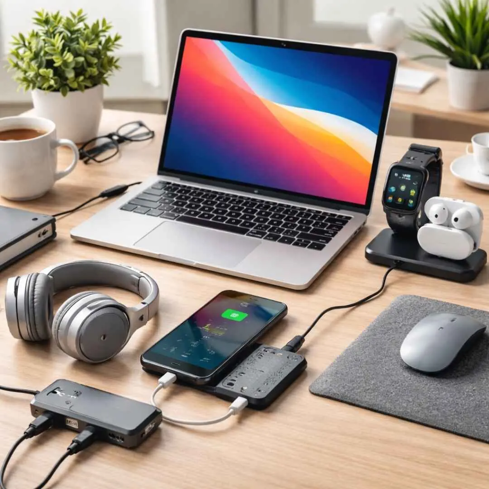
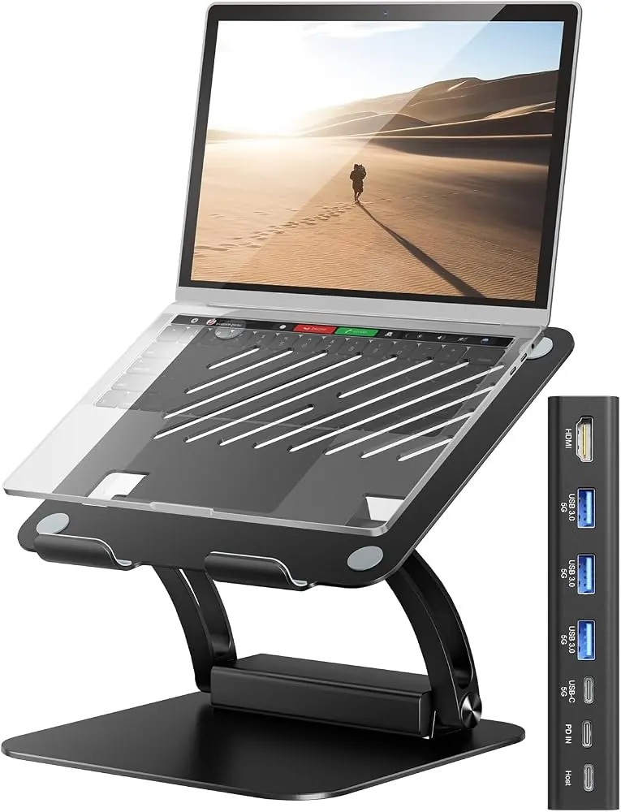

Laptops
10 Laptop Accessories That Boost Productivity
Discover ten practical laptop accessories that can improve comfort, organisation, connectivity and productivity at home, school or work.
Introduction: Make Your Laptop Work Better for You
Laptops are made to be portable however they can have some issues when used for long periods of time each day. This can cause issues such as a small screen, uncomfortable keyboard and limited ports. However adding the correct accessories can make your laptop more comfortable and useful without changing the whole laptop.
To start with you don’t need to get everything. Think about what you use the most and what is causing you a problem. A student may want a mouse and sleeve whereas someone who works remotely may want a monitor, headset and stand. Here are 10 great options:

1. Laptop Stand
Laptop stands will elevate your screen and can help you have a more ergonomic position. This can help you avoid hunching over the desk. There are different types you can choose from, fixed, adjustable, folding or portable. Make sure you pick a stand that can support your laptop size and weight.
Ensure that the stand doesn’t block any of the ventilation on your laptop. If you’re raising your screen then an external keyboard and mouse will help to get your hands into a comfortable position. This is not a complete solution to ergonomics but can help your workstation.
2. External Keyboard
An external keyboard can be a great addition if you’re using a stand or larger monitor. This can give you a more familiar keyboard, special navigation keys or just a more comfortable typing experience. Wired keyboards are easy to set up whereas wireless keyboards can help to reduce cable clutter.
When choosing think about the keyboard layout, spacing, connectivity and compatibility with your Operating System. If you often use multiple languages then ensure the keyboard will have the correct layout and connectivity. Your keyboard should be comfortable to type on.
3. Wireless/Ergonomic Mouse
A mouse can help you select text, edit spreadsheets, design software and manage multiple windows quicker than using just the touchpad. Wireless mice can be very flexible. Wired mice won’t need to be charged. Ergonomic can be more comfortable for some but this depends on personal preference.
Ensure that your mouse fits your hand size and workspace. Check if it’s Bluetooth or USB and your laptop has the correct connectivity. Ensure it’s close to your keyboard.
4. External Monitor
An external monitor can help with extra screen space when working on documents, coding, spreadsheets, research and video calls. This can help you avoid having to constantly switch between windows. Choose the correct size and resolution for your desk. Ensure your laptop can support the connection and display.
Think about the panel type, brightness, adjustability and port availability. Ensure you have it at a comfortable distance and reduce glare from windows or lights. If you’re using your laptops screen as a secondary screen then a stand can help you with positioning.

5. USB-C Hub/Docking Station
Modern laptops can often have limited ports. A USB-C hub will help with extra connections for USB, memory cards, displays and sometimes wired network connections. A docking station can give you a more permanent single cable setup with multiple displays.
It’s important to ensure it’s compatible. Not all USB-C ports will support video, charging or the same data speeds. Ensure your laptop meets the hub requirements and check the display, charging and number of ports supported. Choose a reliable adaptor and ensure it has the right power rating. If you’re using an external monitor then ensure it can charge.
6. Headset/External Microphone
Having good audio can really help during online lessons, customer calls and team meetings. A headset can help you avoid background noise and echo from the speakers. Some have a boom mike which can help bring the microphone close to your mouth. Wireless mouses can help you stay flexible whereas wired can be simpler and don’t need charging.
Ensure it’s comfortable, good quality microphone, correct connectivity and compatible with your meeting software. Try your headset out prior to an important call. Ensure your microphone is in the correct position. If you’re often presenting or recording then a dedicated USB microphone can give you more consistent audio. Ensure it’s in the right place and you’re in a quiet area.
7. Laptop Sleeve/Backpack
A padded sleeve or compartment will help protect your laptop from scratches and light bumps. Ensure it’s the right size for your laptop and won’t put pressure on the screen. A backpack with a dedicated compartment can help you store your charger, notebook and accessories.
This will depend on how it’s made, how well it fits and how you use it. A sleeve won’t fully protect from dropping or squashing. Ensure any liquids are in their own sealed compartment. Don’t place anything heavy on top. Ensure your laptop is powered down or in the correct power mode before travelling.
8. External Storage/Backup Drive
An external SSD or hard drive can help give you extra space for large projects, images, videos and backing up. SSD’s are small and generally faster. HDD’s can give you more space for less per GB. Choose based on size, speed, portability and connectivity.
Try to back up regularly rather than just when you remember. Ensure you have at least one backup away from your laptop. If you’re doing confidential work then look at using an encrypted drive. Follow your organisations storage policies. Whilst this can be useful it shouldn’t be your only copy of important information.
9. Laptop Cooling Pad
A cooling pad will help circulate air with fans. This can be useful for some models to help keep airflow when working hard. This can be useful for gaming or long periods of use. However it will depend on your laptops intake and how well the cooling pad lines up. This won’t help if your fan isn’t working, or there is a blockage in the heatsink or dust build up.
Ensure it’s stable and doesn’t block any of the laptops vents. Check if it’s noisy and the correct power connectivity. If your laptop is overheating during normal use then find out why.
10. Privacy Filter/External Webcam
A privacy filter can help reduce the viewing angle of your laptop screen. This can make it harder for people next to you to see what you’re doing in public areas. Ensure you know the exact measurements of your screen and how it attaches. Some can reduce the brightness and effect touchscreen. Ensure it’s compatible.
An external webcam can help with positioning and image quality if you’re often using video calls. Ensure it has the correct resolution, field-of-view, low light, microphone options and how it attaches. Ensure it’s at eye level and follows your privacy policies at work.
How to Choose Accessories Without Spending Too Much
Pick the accessories that will help you with a recurring issue. If you’re often typing for long periods then a keyboard may be more important than nice lighting. If you’re often travelling then a sleeve and small charger would be more useful than a big docking station. Ensure it’s compatible, has a warranty, good build quality and return policy.
Don’t plug too many power hungry devices into a poor quality hub. Use approved chargers and cables from the manufacturer with the correct power rating. Keeping your desk tidy, internet reliable and good backup habits can help increase your productivity.
Conclusion
The best laptop accessories will help you avoid any issues during your daily use. Adding a stand, keyboard, mouse and monitor can help your desk setup. A hub, headset and storage can help with certain workflows. A sleeve will help protect whilst travelling. A cooling pad or privacy filter can help in certain scenarios. Start with the biggest issue you have daily and ensure it’s compatible.
Need a hand with your printer or laptop?
Printerworld sells printers, laptops and genuine supplies, and repairs and services both. Bring in your model number and we will help you get it right.